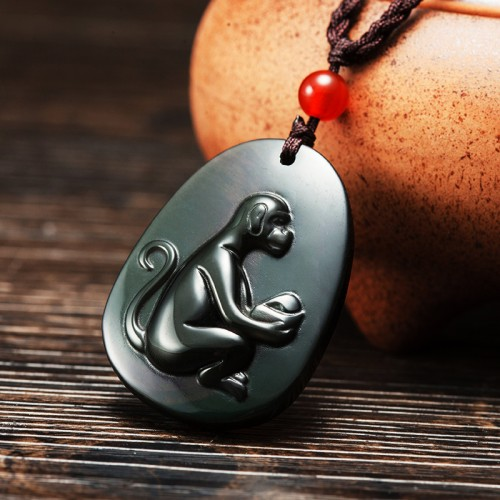

Tips：农历生肖运势即将进入2018年狗年，属鼠2018年运势及运程抢先看，新年早开运，狗年求吉祥！
属鼠2017年运势及运程大解析
出生年份：2008、1996、1984、1972、1960、1948年
属鼠人2017年事业运势
子玉风水大师点评——专心工作 闲事莫理
生肖属鼠的人，进入2017丁酉鸡年，今年虽然命宫中凶星众多，子酉相破，是为破太岁，也是犯太岁的一种。但幸有「地解」吉星照命，故此虽然将会有诸多阻滞，但若能小心处事，将可逢凶化吉，转祸为祥！工作方面将会有不少人事纷争，以致往往举步维艰，或甚至停滞不前！化解之道，最好是专心做好自己本份，其它闲事莫理，尽量保持低调，明哲保身。此外，因有「亡神」凶星出现在命宫中，警示今年工作精神虽以集中，甚至会有无心工作的倾向；若不努力矫正此弊，今年事业便难望有所作为！因有「卒暴」凶星照命，警示今年工作若不由始至终全力以赴，很可能中途突然夭折而前功尽废。全年来说，今年的春季及秋季运势较为畅顺，若想事业有成，必须好好把握两段难得的好时机。年尾的三个月运势低沉，工作进展节外生枝，属鼠的人除了要努力不懈，并要警惕自己千万不可以下犯上，以免自误前程。今年工作进展较多阻滞的月份，是农历的四月、五月、八月、十月及十一月。今年工作进展较畅顺的月份，是农历正月、二月、七月及九月。鉴于属鼠今年破太岁，应及时奉请【子玉风水化太岁增庆福袋】，以化解太岁，保一岁平安。

属鼠人2017年财运精准预测
子玉风水大师点评——横财勿贪 知足常乐
属鼠的人，今年的财运似是而非，正财收入尚算稳定富足；但横财甚为反复波动，故此千万不可沉迷赌博，以免后悔莫及！今年必须切戒贪念，以免因贪而受骗破财。今年的理财原则应该注意节流，尽量减省不必要的开销，以免入不敷支而出现经济困难！此外，并需提高警惕，慎防受骗破财。幸而正财尚算稳定，只要知足常乐，便不需为经济问题担忧。今年财运欠佳的月份，是农历三月、四月、五月、十月及十二月！农历四月很可能要破财挡灾，九月需防财多惹盗，十二月则需防金钱圈套。今年财运较佳的月份，是农历的正月、二月、七月及九月，好好把握时机开源节流。出门求财，可查一下今年财神方位，择吉日而行。
属鼠人2017年健康运势
子玉风水大师点评——精神涣散 慎保心脏
属鼠的人，今年健康情况似是而非，但因有「亡神」照命，警示精神较易涣散，有心种恍惚之虞！故此必须有充足睡眠休息，才能养精蓄锐而不再散漫下去。今年心脏和血压容易出现毛病，必须小心保养，以免后悔莫及。新春出门必须密切注意安全，慎防意外受伤；秋冬之间则必须饱饭加衣，以免因为感染风寒而引致病魔缠身。切勿因好奇而沾染毒品，以免一失足成千古恨。今年健康易出问题的月份，是农历三月、四月、五月、八月及十月！农历正月出门需防意外受伤，十月需防积劳成疾。
属鼠人2017年爱情婚姻运势
子玉风水大师点评——情投意合 公私分明
属鼠的人，今年因为命宫中「太阴」吉星得位，故此喜好享乐，而且亦易与异性擦出感情火花，感情生活将会多姿多采，但切勿太放纵任性，以免乐极生悲！并且一定要公私分明，尽量避免因为儿女私情而耽误了公事。面对感情抉择之际，必须保持冷静，切勿太感情用事。今年感情进展良好的月份，是农历正月、二月、七月及九月，好好把握时机培养情苗。
属鼠的青少年2017年运势
今年较为自我，容易与同学或同事发生矛盾争执；必须好好与人沟通合作，以免被人排挤孤立。读书精神难以集中，以致学业成绩将会大受影响；必须力矫此弊。出门必须密切注意安全，慎防意外受伤，并切勿沾惹毒品。
属鼠的女性2017年运势
今年财运平平，切戒妄起贪念，以免因然而受骗破财。健康欠佳，慎防心脏和血压出现问题；此外，并需密切注塑居安全。属鼠的少女，今年易与异性投缘，感情大有进展，但需保持冷静；以免多情反被多情误。
属鼠人2017年开运吉祥物

属鼠人2017年吉凶方位
属鼠的人今年的三个生旺吉方，是东方、西方及西北；若能把睡床、工作台和沙发摆放在屋内这三个方位上，便可符合这生肖今年的风水趋吉之道，有助改善流年运程。
倘若未能如此，最少亦要把这三种最重要的家具避开东南及北方，以符合避凶之道。以上所提出的吉凶方位，是纯以生肖属鼠的人来计算；而与其它生肖无关，请勿混淆。
属鼠人2017年幸运色
属鼠的人今年的生旺颜色是橙、白以及黄色；若能利用这些颜色来布置房间、或配衬衣物，这会对改善流年运程大有帮助！属鼠的人今年忌蓝色及绿色，最好能尽量避免使用。
属鼠人2017年幸运数
属鼠的人今年的生旺数字是4及9
属鼠的人2018年运程已发布，敬请关注！
不同鼠年出生的属鼠人2017年运势详解
2008年属鼠的人2017年运程
2008年出生的人，今年容易与同学发生争执，很可能被人孤立。读书精神难以集中，需尽量努力矫正。
1996年属鼠的人2017年运程
1996年出生的人，今年易与异性擦出感情火花，但切勿因而耽误前程。切勿沾惹毒品，以免一失足成千古恨。96年属鼠人今年若要开运解灾，增旺运势，可佩戴本站周易专家团队精心设计的增庆堂属鼠2017吉祥物吊坠，该吉祥物图案为一只猿猴手捧官印，采用高档彩虹眼黑曜石精雕而成，助您化解犯太岁的不利局面，寓意您在2017年，瑞气常临，封猴拜印，事业上得贵人礼遇，俸禄频增，功名显达。亦可同时佩戴增庆堂属鼠六合贵人手链，更具功效。开车人士，可在爱车挂上一串增庆堂吉祥莲花琉璃挂件，以保行车安全。
1984年属鼠的人2017年运程
1984年出生的人，今年工作方面会有诸多人事纷争，必须明哲保身，闲事莫理！此外，并需慎防受骗破财。84年属鼠人今年若要开运解灾，增旺运势，可佩戴本站周易专家团队精心设计的增庆堂属鼠2017吉祥物吊坠，该吉祥物图案为一只猿猴手捧官印，采用高档彩虹眼黑曜石精雕而成，助您化解犯太岁的不利局面，寓意您在2017年，瑞气常临，封猴拜印，事业上得贵人礼遇，俸禄频增，功名显达。亦可同时佩戴增庆堂属鼠六合贵人手链，更具功效。开车人士，可在爱车挂上一串增庆堂吉祥莲花琉璃挂件，以保行车安全。
1972年属鼠的人2017年运程
1972年出生的人，今年工作必须贯彻始终，切勿因中途松懈而导致前功尽废。理财应以如何节流为主。72年属鼠人今年若要开运解灾，增旺运势，可佩戴本站周易专家团队精心设计的增庆堂属鼠2017吉祥物吊坠，该吉祥物图案为一只猿猴手捧官印，采用高档彩虹眼黑曜石精雕而成，助您化解犯太岁的不利局面，寓意您在2017年，瑞气常临，封猴拜印，事业上得贵人礼遇，俸禄频增，功名显达。亦可同时佩戴增庆堂属鼠六合贵人手链，更具功效。开车人士，可在爱车挂上一串增庆堂吉祥莲花琉璃挂件，以保行车安全。
1960年属鼠的人2017年运程
1960年出生的人，今年横财莫贪，以免因贪而破财。待人处事必须尽量保持低调，以免工作进展停滞不前。60年属鼠人今年若要开运解灾，增旺运势，可佩戴本站周易专家团队精心设计的增庆堂属鼠2017吉祥物，该吉祥物图案为一只猿猴手捧官印，采用高档彩虹眼黑曜石精雕而成，助您化解犯太岁的不利局面，寓意您在2017年，瑞气常临，封猴拜印，事业上得贵人礼遇，俸禄频增，功名显达。亦可同时佩戴增庆堂六合贵人手链，更具功效。开车人士，可在爱车挂上一串增庆堂吉祥莲花琉璃挂件，以保行车安全。
1948年属鼠的人2017年运程
1948年出生的人，今年健康欠佳，必须有充足睡眠休息！特别要注意心脏和血压的问题，切勿疏忽大意。
属鼠人2017年全年每月运势
农历正月 公历2017年2月3日至3月5日
本月吉星拱照，迎春接福
属鼠的人今年运势平平，但年初这个月因为命宫吉星拱照，故此大吉大利，正是大展鸿图的良机！灵感涌现，工作能力特强，事半功倍。在这段期间最重要的，是选好目标便切勿三心两意，必须朝着目标埋头苦干，以免因为摇摆不定而自误前程。财运畅旺，正财及横财均有所获；若要投资创业或转工，这正是有利时机。健康平平，出门必须密切注意安全，慎防意外受伤。交际应酬繁忙，易与异性擦出感情火花。
农历一月 公历2017年3月6日至4月4日
本月福至心灵，脱颖而出
这个月运势依然畅旺，对于属鼠的人来说，年初这两个月是全年运势最有利的一段时期，故此若想今年事业有成，便切勿错过这段好时机！工作进展得心应手，而且还会获得外力支持，可望脱颖而出，青云直上！在这段期间最重要的，是切勿被胜利冲昏了头脑，必须保持冷静，稳中求胜才可确保成果。财星高照，投资有利可图；但横财反复，月尾切勿赌博或参与投机买卖。感情生活多姿多采，但切勿太放纵任性。
农历三月 公历2017年4月5日至5月5日
本月反复向下，有备无患
这个月的运势反复向下，月初尚算平稳，但月中开始便会出现暗涌，切勿掉以轻心，以免失败得莫名其妙！在这段期间最重要的，是必须保持警惕，慎防突然而来的无妄之灾，以免被打击得一蹶不振，有备则可无患。财运低迷，理财必须加倍小心谨慎，以免钱财流泄不止，并需慎防受骗破财。这个月神经紧张，情绪波动甚大，以致睡眠及健康均大受影响！必须尽量放松自己，感情出现暗涌，必须小心维系。
农历四月 公历2017年5月6日至6月5日
本月风云险恶，慎防小人
这个月的运势崎岖，因有「勾绞」凶星出现在命宫中，这示将会容易招惹小人，是非缠身。工作进展诸多阻滞，而且很可能因有人从中作梗而功败垂成！在这段期间最重要的，是切勿招摇树敌，必须尽量保持低调，对小人最好是敬而远之，明哲保身。这一个月财星破损，钱财易泄，必须尽可能量入为出，以免出现经济危机！月中很可能要破财挡灾，健康易出问题，特别要注意心脏和血压保养，千万不可掉以轻心。
农历五月 公历2017年6月6日至7月7日
本月诸多挑战，忍辱负重
这个月的运势每况愈下，不如意事将会接连而来，必须先有心理准备，以免临事手足无措。工作方面将会面对诸多挑战，而且很可能被人孤立排挤。在这一段期间最重要的，是面对挑战和排挤，切勿针锋相对，以免令事态更恶化下去！应该以退为进，忍辱负重。财运低迷不振，投资及赌博暂以忍手为宜，切勿强求，以免输得焦头烂额。健康虽然略有改善，但仍需多些休养生息。感情易起风波，尽量避免剧烈争吵。
农历六月 公历2017年7月7日至8月6日
本月沉默是金，横财勿贪
这个月的运势虽略有起色，但仍将会浮沉不定，故此仍需保持警惕戒备，以免大意失荆州！工作进展先衰后盛，月初仍会有不少阻滞，但月尾便会出现曙光，渐入佳境！在这段期间最重要的，是必须谨口慎言，沉默是金，以免口舌招尤而引起无穷后患。这个月财运反复向上，正财收入回复正常，经济压力稍减；但横财依然反复，故此请紧记横财勿贪，以免因贪而变贫！要注意改善人缘，特别要注意改善与爱侣的感情。
农历七月 公历2017年8月8日至9月7日
本月先发制人，打铁趁热
这个月因有「地解」吉星照命，故可逢凶化吉，运势大吉大利！工作困阻一一消除，而且困扰多时的人事纷争亦烟消云散，可以重新走上正轨，在这一段期间最重要的，是要抢占先机，尽量争取先发制人，打铁趁热才可稳操胜券！切勿太过犹豫，以免坐失良机而后悔莫及，财星高照，这个月财运亨通，正财收入丰足，而且会有不少意外收入，但切忌贪得无厌。这个月易与异性投缘，情投意合，但切勿因而耽误了公事。
农历八月 公历2017年9月8日至10月8日
本月慎防病毒，知足常乐
因有「贯索」凶星出现在命宫中，这个月的运势将会出现诸多变卦；但只要及早看清形势，沉着应变，便不会出现大问题。工作进展往往节外生枝，而且对方很可能违诺失信！在这段期间最重要的，是要处变不惊，遇有任何变故切勿张惶失措，以免自乱阵脚！这个月最需要注意的，是健康问题，慎防病毒入侵，故此必须密切注意日常起居的饮食卫生。财运平平，但只要知足常乐，便不需为经济问题担忧。
农历九月 公历2017年10月9日至11月7日
本月得心应手，投资有利
这个月因有「太阴」吉星照命，故此阴霾一扫而空，晴空万里任翱翔，正是大展鸿图的良好时机！工作得心应手，而且会有贵人指引提携，更可如虎添翼！在这段期间最重要的，是必须集中注意力埋头苦干，全力以赴，以确保能达到目的为止。财运大有起色，投资有利，投资创业或购置物业均大有可为！但请紧记钱财切勿露眼，以免财多惹盗。健康大有改善，但仍需注意饮食卫生。感情出现转机，好好珍惜情苗。
农历十月 公历2017年11月8日至12月7日
本月冷眼旁观，临危不乱
因为有众多凶星出现在命宫中，故此这个月的运势一落千丈！非但工作进展诸多阻滞，而且人事纷争亦此起彼落。在这段期间最重要的，是必须冷眼旁观，先看清楚形势才再谋定而后动！千万不可反应过敏，以免被人有机可乘而一败涂地。财星破损，非但钱财易泄，而且还会有不少意想不到的支出，或甚至要破财挡灾！故此这个月理财原则是重节流而不重开源。健康欠佳，不但要慎防风寒，亦要慎防积劳成疾。
农历十一月 公历2017年12月8日至2018年1月5日
本月紧守岗位，逆来顺受
透个月的运势崎岖，诸多阻滞！农历十月及十一月是全年之中运势最不吉利的一段时期；凡事必须三思而行，切勿轻举妄动。工作上的人事纷争有增无已，愈演愈烈。在这期间最重要的，是必须紧守岗位，做好自己本份，闲事莫理，更千万不可以下犯上，以免自毁前程！请紧记逆来顺受便可海阔天空，因有「孤神」凶星照命，警示这个月会有孤僻及离群独处的倾向，若不设法矫正，便很可能众叛亲离，以及感情破裂。
农历十二月 公历2017年1月6日至2018年2月3日
本月专注工作，得失随缘
属鼠的人今年运势吉凶参半，年尾这个月运势略有回升，但仍将会有余波荡漾，故此未可放松戒备。工作进展时有阻滞，而且还会有精神涣散而难以集中精神工作的倾向！在这段期间最重要的，是必须振奋起来，集中心力来应付工作，以免前功尽废！财运略为回稳，正财尚可，但横财则绝对不宜憧憬。此外，并需小心提防金钱圈套，以免因而人财两失。这个月感情落寞，难与异性投缘，但只能随缘发展，切勿强求。
2018年运程十二生肖运势：属鼠2018年运势及运程
读过此篇文章的网友还读过：
☑ 属猪的人2017年运程
☑ 属狗的人2017年运程
☑ 属鸡的人2017年运程
☑ 属蛇的人2017年运程
☑ 属牛的人2017年运程
☑ 属马的人2017年运程